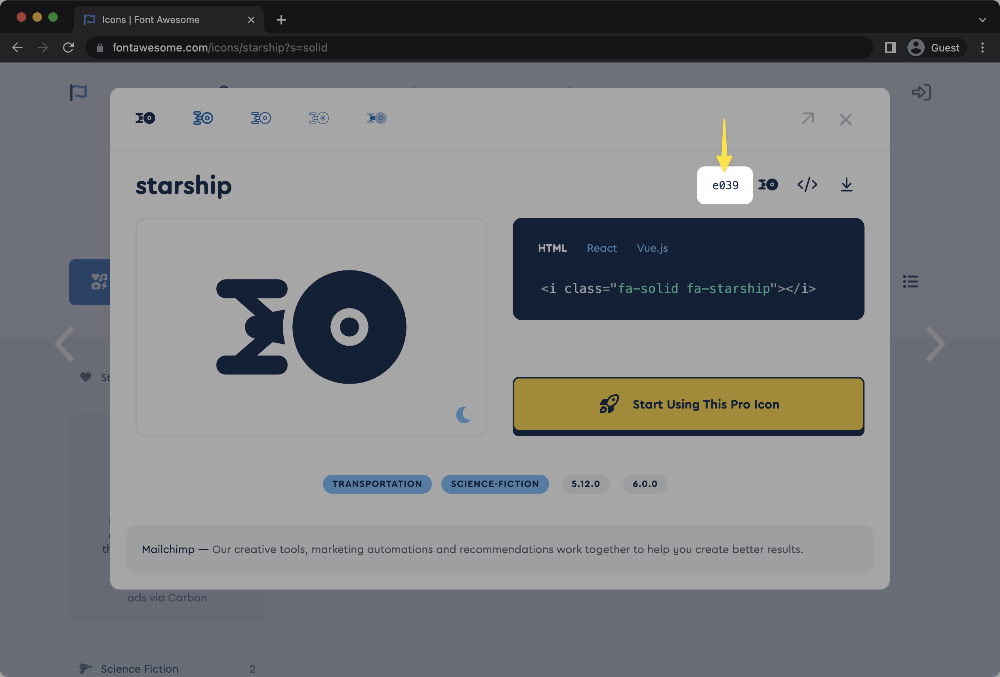

Añadimos el siguiente script en el head de nuestra pagina web o de los templates que hagamos
<script src="https://kit.fontawesome.com/45614cee74.js" crossorigin="anonymous"></script>
Para añadir iconos a nuestra pagina debemos usar la etiqueta <i> con la clase que nos indique la página.
<i class="fa-solid fa-face-smile"></i>
Aquí tenemos un ejemplo de como quedarían distintos estilos y familias
|
Primero, deberá agregar algunas propiedades CSS comunes que se aplican a todos los íconos. Es mejor eliminar esto primero para simplificar el CSS de su icono individual. Puede convertirlo en una regla separada o incluir el estilo en cada regla de icono individual (en el siguiente paso).
/* Step 1: Common Properties
These styles are required to make icons render reliably */
.icon::before {
display: inline-block;
text-rendering: auto;
-webkit-font-smoothing: antialiased;
}
Hay algunos elementos importantes que se deben incluir al hacer referencia a cualquier icono individual:
::before o ::after que usó en el paso de configuración común anterior. /* Step 1: Common Properties: All required to make icons render reliably - we did this above but it's included here for the full demo */
.icon::before {
display: inline-block;
text-rendering: auto;
-webkit-font-smoothing: antialiased;
}
/* Step 2: Reference Individual Icons */
/* Note: Make sure to include the correct weight and Unicode value for the icon */
/* an example rule targeting any element with the "account" class to render fa-user icon in the Solid style */{
.account::before {
font: var(--fa-font-solid);
content: "\f007";
}
/* an example rule targeting any element with the "warning" class to render fa-triangle-exclamation icon in the Regular style */{
.warning::before {{
font: var(--fa-font-regular);{
content: "\f071";{
}
/* an example rule targeting any element with the "updates" class to render fa-newspaper icon in the Light style */
.updates::before {
font: var(--fa-font-light);
content: "\f1ea";
}
/* an example rule targeting any element with the "delete" class to render fa-trash icon in the Sharp Solid style */
.delete::before {
font: var(--fa-font-sharp-solid);
content: "\f1f8";
}
/* an example rule targeting any element with the "gaming" class to render fa-discord Brand icon */
.gaming::before {
font: var(--fa-font-brands);
content: "\f392";
}
Para agregar íconos desde un archivo sprite, siga estos pasos:
body de su documento, llame al ícono individual por su nombre en el archivo de sprite para el estilo que desea usar. ¡Asegúrate de que la ruta apunte correctamente a donde colocaste los archivos de sprites y que estén alojados en el mismo servidor !Aquí hay algunos ejemplos de cómo puede llamar iconos en una variedad de estilos:
<header>
<ul>
<li>
<!-- referencing a solid style icon -->
<svg>
<use xlink:href="/your-path-to-fontawesome/sprites/solid.svg#saxophone-fire"></use>
</svg>
</li>
<li>
<!-- referencing a thin style icon -->
<svg>
<use xlink:href="/your-path-to-fontawesome/sprites/thin.svg#trumpet"></use>
</svg>
</li>
</li>
</!-- referencing a sharp family's solid style icon -->
</svg>
</use xlink:href="/your-path-to-fontawesome/sprites/sharp-solid.svg#piano-keyboard"></use>
</svg>
</li>
</li>
</a href="https://facebook.com/fontawesome">
</!-- referencing a brands family icon -->
</svg>
</use xlink:href="/your-path-to-fontawesome/sprites/fa-brands.svg#facebook"></use>
</svg>
</a>
</li>
</li>
</a href="https://twitter.com/fontawesome">
</!-- referencing a brands family icon -->
</svg>
</use xlink:href="/your-path-to-fontawesome/sprites/fa-brands.svg#twitter"></use>
</svg>
</a>
</li>
</li>
</a href="https://github.com/FortAwesome/Font-Awesome">
</!-- referencing a brands family icon -->
</svg>
</use xlink:href="/your-path-to-fontawesome/sprites/fa-brands.svg#github"></use>
</svg>
</a>
</li>
</ul>
</header>
Puede agregar íconos en cualquier estilo como unicodes cuando usa el método SVG+JS. Simplemente agregue la clase para el estilo que desea usar para seleccionar el estilo del ícono, luego inserte el valor Unicode,
ntes y ;después del Unicode, entre el elemento de apertura y cierre <i>.
Aquí hay unos ejemplos:
| B 1 ! |
<i class="fa-solid fa-2x">B</i> |
Cuando busque íconos, simplemente haga clic en el ícono de su elección y el valor Unicode se mostrará sobre el bloque de código que muestra cómo se puede usar el ícono.
Los íconos de Font Awesome heredan automáticamente el tamaño y el color de CSS (como se ve en los ejemplos a continuación). Esto significa que se mezclan con el texto en línea donde sea que los coloque. Font Awesome trata de no ser demasiado obstinado y establece solo los íconos de reglas de estilo básicas necesarias para representar correctamente en contexto.
<span style="font-size: 3em; color: Tomato;">
<i class="fa-solid fa-camera"></i>
</span>
<span style="font-size: 48px; color: Dodgerblue;">
<i class="fa-solid fa-camera"></i>
</span>
<span style="font-size: 3rem;">
<span style="color: Mediumslateblue;">
<i class="fa-solid fa-camera"></i>
</span>
</span>
|
Si bien incorporar íconos a su proyecto es sencillo, también proporcionamos utilidades de estilo adicionales para cosas como cambiar el tamaño de los íconos, alinear y usar íconos en una lista, así como rotar, transformar y animar íconos para que pueda hacer que sus íconos sean impresionantes.
También puede agregar su propio estilo personalizado a los íconos de Font Awesome agregando sus propias reglas CSS en el código de su proyecto. Todo lo que normalmente puede controlar con CSS está disponible, desde el color hasta la visualización y la alineación.
Font Awesome incluye una variedad de tamaños basados en camisetas que no solo aumentan o disminuyen el tamaño de un ícono, sino que también ayudan a alinear verticalmente un ícono con el texto y los elementos que lo rodean (por ejemplo, relleno de botones). Esto es excelente para aumentar/disminuir el tamaño de un ícono mientras se mantiene la legibilidad y la alineación junto con los elementos de la interfaz de usuario.
| When my six o’clock alarm buzzes, I require a pot of good java. When my six o’clock alarm buzzes, I require a pot of good java. When my six o’clock alarm buzzes, I require a pot of good java. When my six o’clock alarm buzzes, I require a pot of good java. When my six o’clock alarm buzzes, I require a pot of good java. When my six o’clock alarm buzzes, I require a pot of good java. When my six o’clock alarm buzzes, I require a pot of good java. |
<p><i class="fa-solid fa-coffee fa-2xs"></i> When my six o’clock alarm buzzes, I require a pot of good java.</p> |
Al igual que los íconos de Font Awesome, la escala de tamaño relativo se crea teniendo font-sizeen cuenta los 16 píxeles predeterminados de los navegadores modernos y crea pasos hacia arriba o hacia abajo a partir de ahí.
Font Awesome también incluye una escala de tamaño literal para que aumentar el tamaño de un ícono sea 1xfácil 10xy eficiente. El tamaño literal es útil para cambiar el tamaño de los iconos a una escala mayor o en los casos en que la alineación del texto no es una preocupación principal.
<i class="fa-solid fa-camera fa-1x"></i> |
Cuando la alineación del texto y el tamaño de los íconos son importantes para su diseño, también tiene opciones para eso.
Coffee"It is inhumane, in my opinion, to force people who have a genuine medical need for coffee to wait in line behind people who apparently view it as some kind of recreational activity." |
<div style="text-align: center;"> |